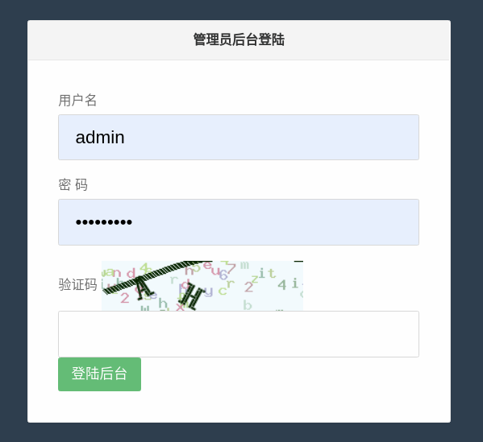
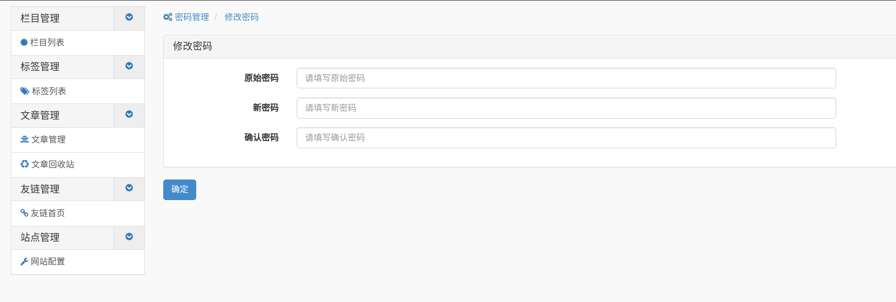

基于TP5后端编写
前言
本想着自己开发个个人博客，但写了个后端逻辑就花了很多时间。正好学一波MVC、tp框架。
项目地址：https://github.com/zhzhdoai/tp5-adminMVC
网站应用目录结构
├── admin
│ ├── controller
│ │ ├── Category.php
│ │ ├── Common.php
│ │ ├── Entry.php
│ │ └── Login.php
│ ├── validate
│ │ ├── Admin.php
│ │ └── Category.php
│ └── view
│ ├── base.html
│ ├── category
│ │ ├── addson.html
│ │ ├── edit.html
│ │ ├── index.html
│ │ └── store.html
│ ├── entry
│ │ ├── index.html
│ │ └── pass.html
│ └── login
│ └── index.html
├── command.php
├── common
│ └── model
│ ├── Admin.php
│ └── Category.php
├── common.php
├── config.php
├── database.php
├── index
│ └── controller
│ └── Index.php
├── route.php
└── tags.php
网站功能
- 管理员后台登录
- 验证码引入
- 顶级栏目和子栏目添加
- 修改密码
功能效果图


总结
- 基于框架开发的安全性和优越性
- 学习了一波MVC框架
- 模板继承和渲染
- tp5框架学习